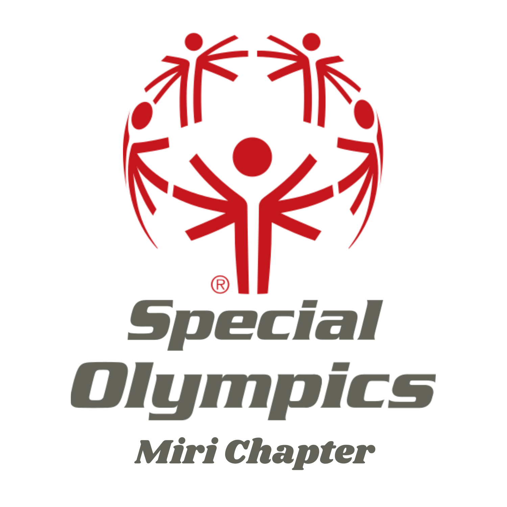
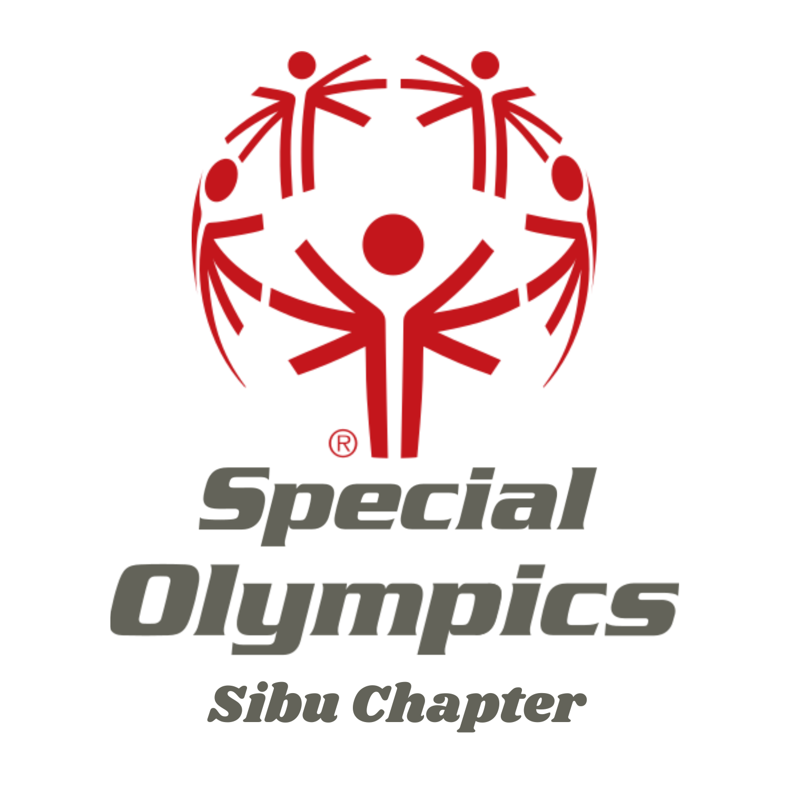
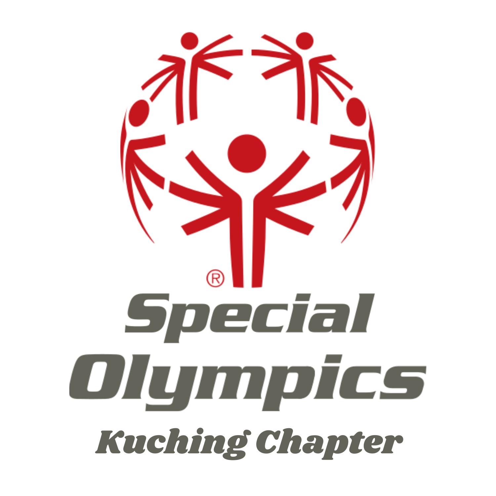
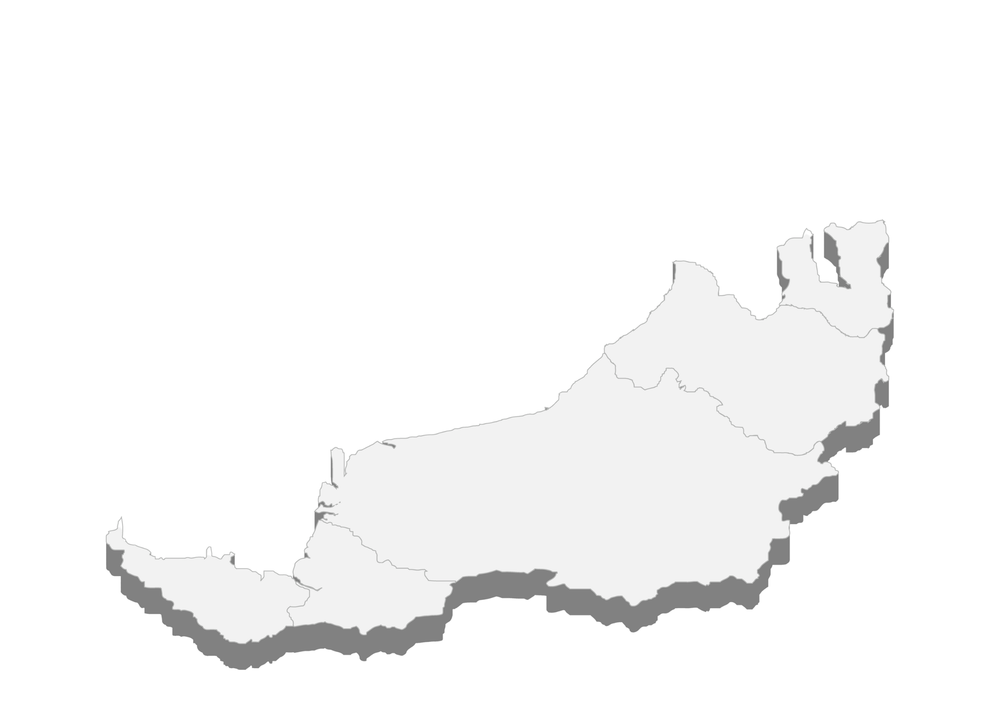

The Special Olympics Sarawak affiliates program brings together organizations and institutions that share our vision of creating inclusive opportunities for athletes with intellectual disabilities. These partnerships strengthen our ability to deliver transformative sports programs that foster acceptance, inclusion, and well-being throughout Sarawak.

Newest chapter; growing fast and set to host the next state games in 2027.
Learn MoreMain chapter and 2025 state games champion; very active with many athletes and programs.
Learn MoreOne of the earliest chapters; strong participation and hosts regular activities.
Learn More

Runs training, health screenings, and inclusive sports with 100+ volunteers.
Learn More
| Category | Male Count | Female Count |
|---|---|---|
| Age 2-7 | 15 | 12 |
| Age 8-12 | 30 | 28 |
| Age 13-18 | 45 | 40 |
| Age 19-25 | 60 | 55 |
| Age 26-30 | 35 | 30 |
| Age 31-35 | 20 | 18 |
| Age 36-40 | 10 | 9 |
| Age 41-45 | 8 | 7 |
| Age 46-50 | 5 | 4 |
| Age 51-55 | 3 | 2 |
| Age 56-60 | 2 | 1 |
| Age 61-65 | 1 | 0 |
| Age 66-70 | 0 | 0 |
| Age 71+ | 0 | 0 |
| Aquatics | 25 | 20 |
| Athletics | 40 | 35 |
| Badminton | 15 | 12 |
| Bocce | 20 | 18 |
| Bowling | 30 | 28 |
| Floorball | 10 | 8 |
| Football | 50 | 45 |
| Healthy Athletes Program | 70 | 65 |
| Athletes Leadership Program | 10 | 8 |
| Young Athletes Program | 20 | 18 |
| Bintulu | 60 | 55 |
| Kuching | 80 | 75 |
| Miri | 40 | 35 |
| Sibu | 50 | 45 |
| Intellectual disabilities | 100 | 90 |
| Autism spectrum disorder | 30 | 28 |
| Down syndrome | 40 | 35 |
| Cerebral palsy | 15 | 12 |
| Prader-Willi syndrome | 5 | 4 |
| Fragile X syndrome | 3 | 2 |
| Williams syndrome | 2 | 1 |
| Fetal alcohol spectrum disorders | 1 | 0 |
| Other development disabilities | 10 | 8 |
| Category | Male Count | Female Count |
|---|---|---|
| Age 18-30 | 10 | 8 |
| Age 31-50 | 25 | 20 |
| Age 51+ | 8 | 6 |
| Aquatics | 5 | 4 |
| Athletics | 10 | 8 |
| Badminton | 3 | 2 |
| Bocce | 4 | 3 |
| Bowling | 6 | 5 |
| Floorball | 2 | 1 |
| Football | 12 | 10 |
| Category | Male Count | Female Count |
|---|---|---|
| Age <13 | 5 | 4 |
| Age 14-17 | 15 | 12 |
| Age 18-30 | 40 | 35 |
| Age 31-40 | 25 | 22 |
| Age 41-50 | 15 | 12 |
| Age 51-60 | 8 | 6 |
| Age 61-70 | 3 | 2 |
| Age 71+ | 1 | 0 |
| Administration support | 10 | 8 |
| Fitness coach | 5 | 4 |
| Fundraising | 15 | 12 |
| General work | 20 | 18 |
| Graphic designer | 2 | 1 |
| Mentor | 8 | 6 |
| Newsletter editor | 1 | 1 |
| Photographer | 3 | 2 |
| Sport coach | 25 | 20 |
| Videographic | 2 | 1 |
| Others | 5 | 4 |
| Aquatics | 10 | 8 |
| Athletics | 15 | 12 |
| Badminton | 5 | 4 |
| Bocce | 7 | 6 |
| Bowling | 10 | 8 |
| Floorball | 4 | 3 |
| Football | 20 | 18 |
| Bintulu | 30 | 25 |
| Kuching | 40 | 35 |
| Miri | 20 | 18 |
| Sibu | 25 | 22 |
| Once weekly | 20 | 18 |
| Once monthly | 30 | 25 |
| Twice monthly | 15 | 12 |
| Flexible | 40 | 35 |